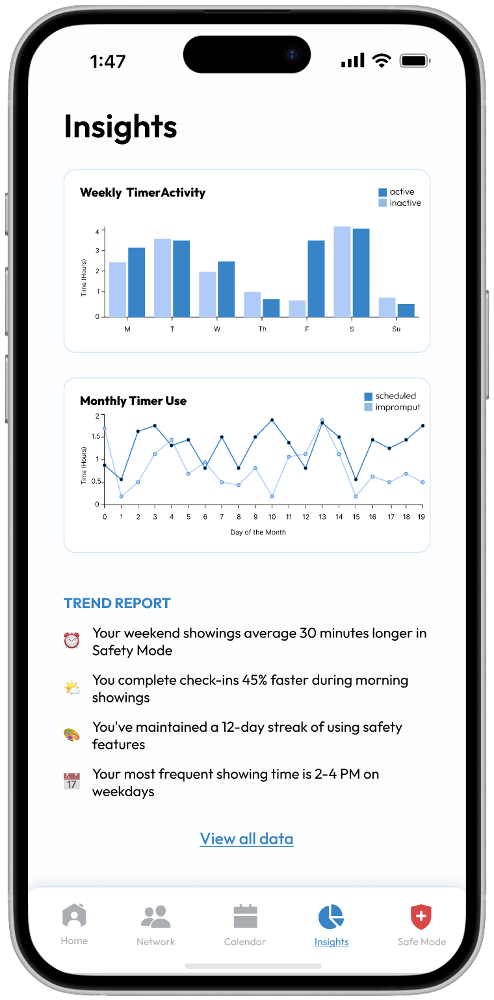
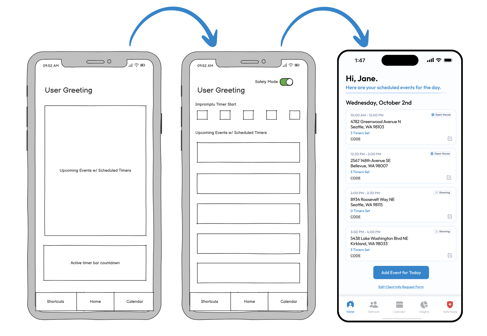
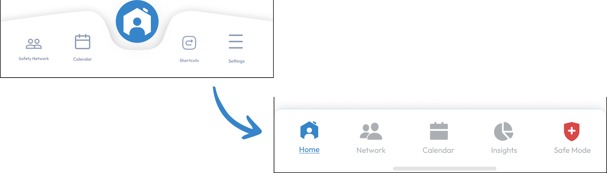
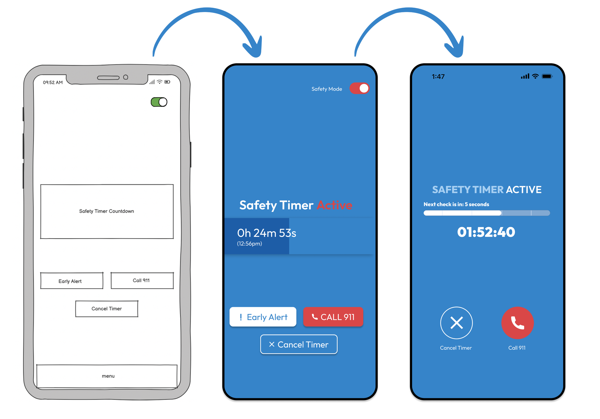
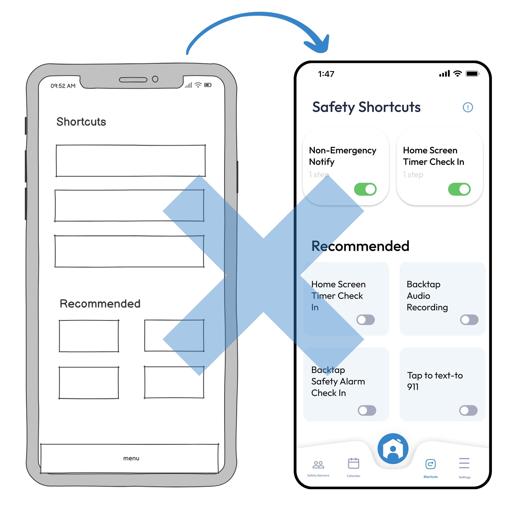
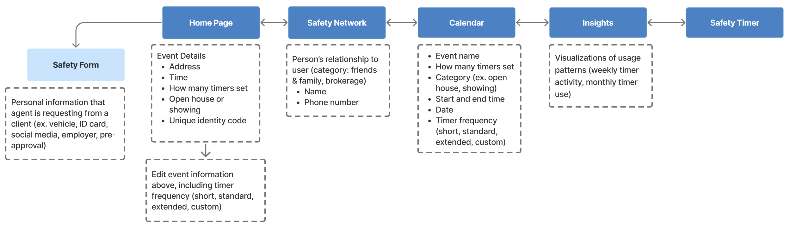
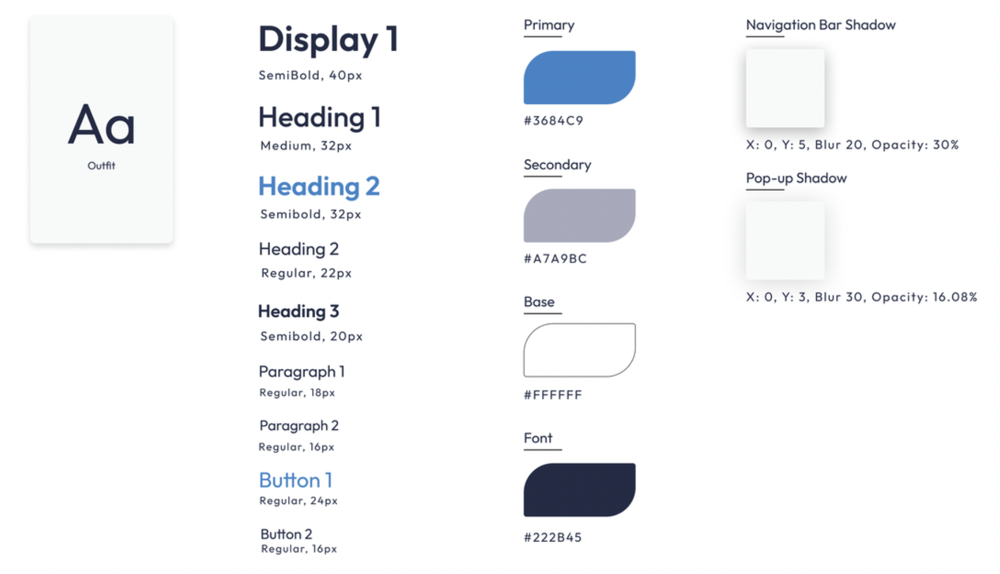

Arc
Arc set out to reimagine what safety looks like for a real estate agent, and to become the industry-wide standard for security. In weekly meetings and constant collaboration with a team of developers, I led four other design interns in researching the features that would advance the existing product and produce a high-fidelity prototype.

How might we make real estate agents feel safer during one-on-ones with clients?
According to the National Association of Realtors, 33% of agents have experienced a situation that made them fear for their safety. They spend hours with strangers at showings and open houses, often in isolated locations.
Yet there is no industry-wide solution for employee safety management — agents are left to improvise with informal habits like texting a friend their location.
“At the end of the day, after many long hours of showing homes, I pour myself a glass of wine, sit down on the couch, and think about all the moments where things could have gone wrong.”
Personalized integration into an agent's existing workflow.
A safety layer built for ease and quick access in high-pressure situations, designed to complement the habits agents already rely on, not replace them.
Quick access to daily schedule and safety features
- All showings in one view (address, time, timer status, and verification codes)
- An expandable CODE button generates identity-verification codes without leaving the screen
- A bottom nav bar gives instant access to Safety Network, Calendar, Insights, and the Safety Mode toggle
Active protection with multiple safety layers
- A timer runs in the background so agents can focus on clients without distraction
- Three taps on the sound button confirms safety (no complex interactions needed)
- Missed check-ins trigger automatic texts to the safety network with location, client info, and audio recordings (where legally permitted)
- One-tap 911 calling, network alerts, and a personal code to deactivate alarms

Data-driven feedback to improve safety habits
- Weekly timer activity and monthly use charts (scheduled vs. impromptu) reveal patterns in safety practices
- Personalized insights highlight behaviors, like longer weekend showings or faster morning check-ins, to encourage actionable change
Customizable pre-showing verification
- Agents can request specific details before meeting (vehicle info, ID, social media, employer, or pre-approval letters)
- Form fields adapt to each agent's onboarding-survey answers, creating an intuitive experience tailored to individual safety needs
Safety solutions should offer automation,
discretion, and personalized check-ins.
To understand agents' needs, I ran a multi-faceted research approach (surveys, interviews, and competitive analysis) on current safety practices, concerns, feature preferences, and the gaps our design could fill. Four takeaways shaped our approach.
Seamless integration
Agents already use informal safety procedures (like sharing location), so a new solution must complement existing habits rather than replace them.
Automation over manual check-ins
Many agents prefer automated safety features (they often forget to manually update colleagues or family during a showing).
Discreet emergency activation
Alerts must be low-profile, with silent activation options to avoid drawing attention in high-risk situations.
Personalized safety settings
Risk tolerance varies from agent to agent, so the system needs customizable check-ins and alerts.
Prioritizing high-stress usability and an intuitive experience.
I integrated user insights at every step, pushing each decision toward what an agent could actually do in a tense, time-pressured moment.
Home page

Agents needed quick access to critical information without feeling overwhelmed. We removed the standalone Safety Mode toggle and kept it persistently accessible in the navigation bar (constant availability, less to think about).
Navigation bar

A new flat layout reduced cognitive load compared to the previous centered design, making every feature equally accessible with clear, recognizable icons.
Safety Mode

This feature was my idea, putting in-the-moment safety first. We mirrored a phone call's layout so that under stress, users wouldn't have to think twice about which button to press while still seeing critical timer info at a glance. I removed the "Early Alert" button (the system triggers it automatically, and users confirmed that in a true emergency they'd call 911 rather than text their network).
Shortcuts

We explored phone shortcuts as a way to integrate Arc into users' devices and leverage existing haptics. Research findings and implementation challenges led us to reevaluate — the benefits didn't justify the development effort, so we discontinued the feature.
The resulting information architecture

A calm, trustworthy system built for clarity.
I built a style guide the team returned to throughout (color, type, and components tuned for legibility and fast recognition in high-stress moments).

Collaboration, leadership, and lessons from a cross-functional project.
This was my first internship and full-scale collaborative project, and I'm deeply grateful to the Arc team for trusting us to bring their idea to life. Working on something with real potential to improve users' lives, physically and mentally, was incredibly rewarding.
My biggest lessons were in leading design sprints (structuring workshops so every team member had a voice while keeping us focused) and in navigating team dynamics with fairness, constructive feedback, and even distribution of responsibility.
Collaborating with developers was a first for me. I was surprised by the natural checks and balances that emerged, but quickly realized they strengthened the product. The lead developer and I made it a priority to reinforce that we weren't separate teams, but one unified team, and I've since started learning front- and back-end development to communicate with engineers more effectively.
While I'm proud of what we accomplished, I'd approach a few things differently: more frequent, earlier user testing, and stronger design–development alignment from the very beginning so feasibility discussions happen alongside ideation.